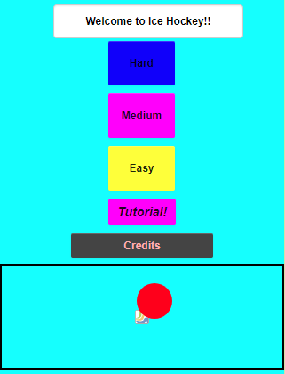
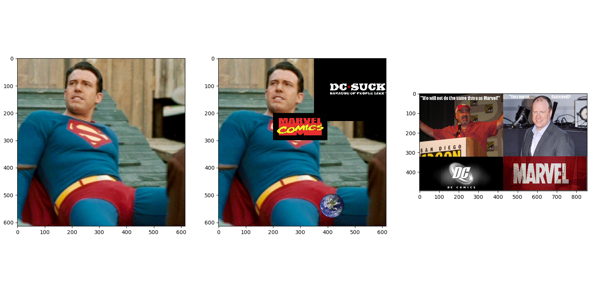
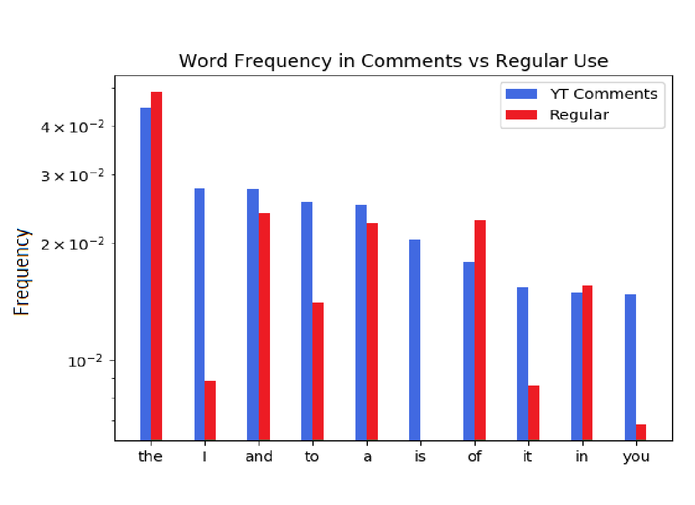

Home
About Me
My Hobbies
My Accomplishments
More Information
This is my Portfolio Page!

My project
"
This is a rags to riches project created by sogious, Chad, Ryan Oh. Enjoy!

This is a field hockey project. It requires a player to score a goal in order to go to the next level!
This is a GPA Calculator Made by Ryan Oh and Thuan Do
The most interesting project was Gokull's (printing out receipt) It was also the hardest to write. The most creative one was asish's
This is our group project for the picture modifications partner:trileen We pasted other images into superman image!

Partner: Adam Question: What is the relationship between the frequency of a word in real life and youtube commments?
aResult: the blue one on the left shows the frequeny in youtube and the green one shows the frequency words in regular lives.
for some words, they were shown in youtube more, but for other words, they were shown in real lives more.
